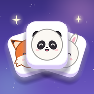

Zoojong – Privacy Policy
Who we are
Zoojong is a mobile game made by Yellow Turtle Games, an independent developer based in Poland (European Union). Contact: yellowturtle80@gmail.com
What the game stores
Your game progress (the level you are on, stars, adopted animals, boosters, daily gifts and settings) is saved only on your device. The game does not connect to the internet, has no user accounts and does not collect, sell or share any personal data. It contains no ads and no analytics.
- Android backup: if backup is turned on for your Google account, Android may back up your game progress to your Google account and restore it when you reinstall the game or switch phones. This is handled by Google; we cannot see it.
Uninstalling the game deletes the data on your device. A backup copy can be deleted in your Google account settings.
Children
Zoojong is not directed at children under 13. The game does not collect personal data from anyone, including children.
Your rights
Under the GDPR you have the right to access, correct, delete or restrict the processing of your personal data. Because the game does not collect personal data, we hold no data about you; you are still welcome to contact us at the address above. You may lodge a complaint with a data protection authority (in Poland: UODO, uodo.gov.pl).
Changes
If the game adds new features that use data (for example ads, game statistics or cloud saves), we will update this page and its effective date before that version is released.
Biz kimiz
Zoojong, Polonya'da (Avrupa Birliği) yaşayan bağımsız geliştirici Yellow Turtle Games tarafından yapılmış bir mobil oyundur. İletişim: yellowturtle80@gmail.com
Oyunun sakladıkları
Oyun ilerlemen (bulunduğun bölüm, yıldızlar, sahiplendiğin hayvanlar, güçlendirmeler, günlük hediyeler ve ayarlar) yalnızca cihazında saklanır. Oyun internete bağlanmaz, kullanıcı hesabı yoktur; hiçbir kişisel veri toplamaz, satmaz ya da paylaşmaz. Oyunda reklam ve istatistik yoktur.
- Android yedeklemesi: Google hesabında yedekleme açıksa Android, oyun ilerlemeni Google hesabına yedekleyebilir ve oyunu yeniden yüklediğinde ya da telefon değiştirdiğinde geri getirebilir. Bunu Google yapar; biz göremeyiz.
Oyunu silmek cihazındaki verileri siler. Yedek kopya Google hesabı ayarlarından silinebilir.
Çocuklar
Zoojong 13 yaşından küçük çocuklara yönelik değildir. Oyun, çocuklar dahil hiç kimseden kişisel veri toplamaz.
Hakların
GDPR kapsamında kişisel verilerine erişme, düzeltme, silme ve işlenmesini kısıtlama hakların vardır. Oyun kişisel veri toplamadığı için hakkında sakladığımız bir veri yoktur; yine de yukarıdaki adresten bize yazabilirsin. Bir veri koruma otoritesine şikâyette bulunabilirsin (Polonya'da: UODO, uodo.gov.pl).
Değişiklikler
Oyuna veri kullanan yeni özellikler (örneğin reklam, oyun istatistikleri ya da bulut kaydı) eklenirse, o sürüm çıkmadan önce bu sayfayı ve tarihini güncelleriz.